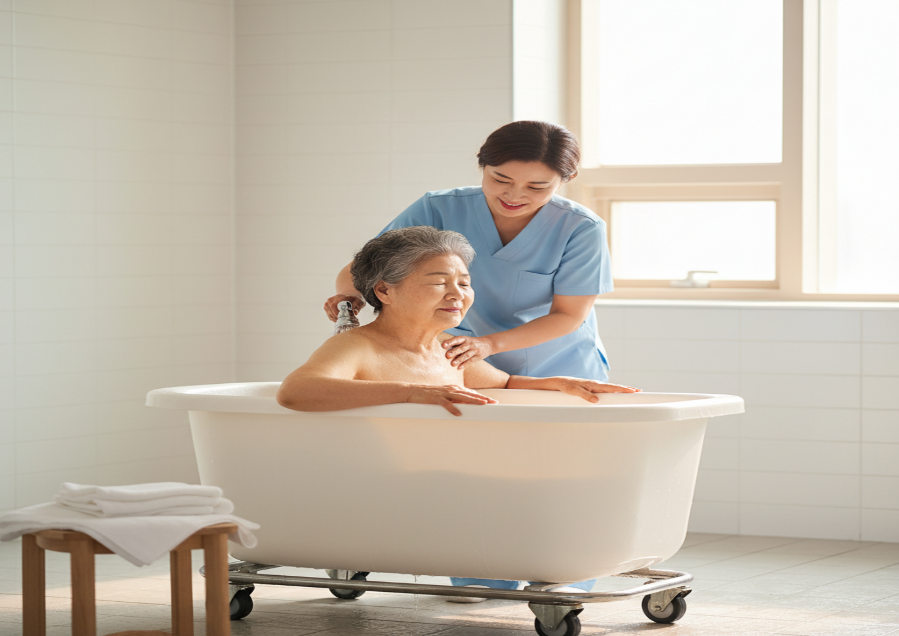
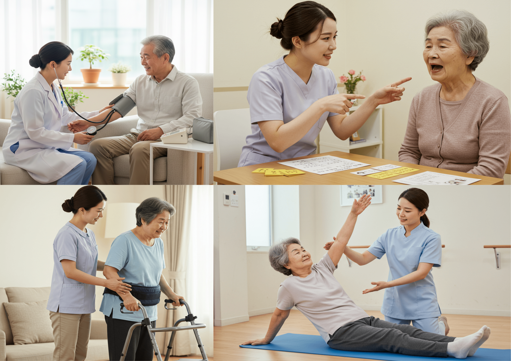

엄마손통합재가복지센터의 주요 서비스를 안내합니다

| 서비스 구분 | 세부 내용 |
|---|---|
| 신체활동 지원 | 세면도움, 구강관리, 식사도움, 몸 청결, 체위변경, 이동도움, 몸 단장, 신체기능 유지, 옷 갈아입히기, 행동변화 대처, 배설도움 |
| 가사 및 일상생활 지원 | 주변 정리, 일상업무 대행, 세탁, 청소, 외출 시 동행, 취사 |
| 정서 지원 | 말벗, 생활상담 |

| 서비스 구분 | 세부 내용 |
|---|---|
| 전문 목욕 | 입욕 준비, 머리감기, 몸 씻기, 말리기, 옷 입히기, 주변 정리 |

| 서비스 구분 | 세부 내용 |
|---|---|
| 건강관리 | 건강상태 관찰, 혈압·맥박·호흡·체온 측정 |
| 질병관리 | 약물 관리, 투약 관리 |
| 신체기능 관리 | 물리치료, 통증관리 |
| 배뇨·배변 관리 | 소변줄 관리, 장루 교환 및 간호 |
| 욕창관리 | 상처 및 욕창 치료, 욕창 예방 간호 |